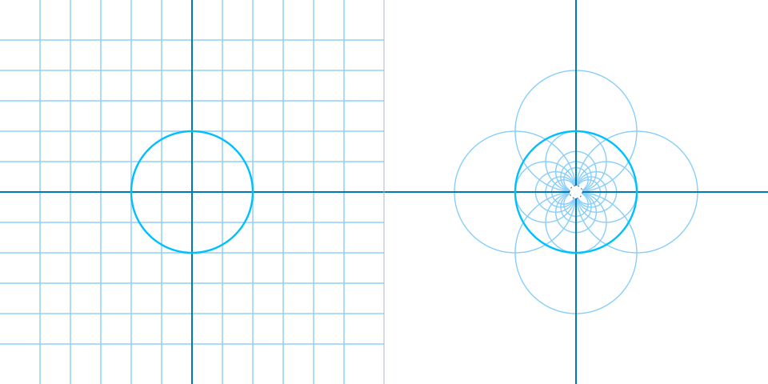

MSR-MOD-0002 · MSR-FIG-0002 — A dimensionless mathematical teaching fixture. Not an infrastructure, sustainability, or resilience simulation.
For a radius r and center at the origin, I(x) = r²x / ||x||², for x ≠ 0. A single transformation sends straight grid lines away from the origin to circles through the origin. The transformation is its own inverse.
Outlined points identify an input location and its transformed image; these are mathematical coordinates, not infrastructure observations.
Diagnostics use JavaScript binary64 arithmetic; GPU pixel positions use device-dependent precision. Values may differ near hardware precision limits.

Static mathematical explanation remains available if GPU rendering is unsupported.
Let u = x / ||x||. The Jacobian is J(x)=(r²/||x||²)(I−2uuᵀ). Consequently, JᵀJ=(r⁴/||x||⁴)I, and inversion preserves angle magnitude but reverses orientation. The Python reference tests involution, the radial product, fixed sphere, singularity and Jacobian.
Reference computations use float64. GPU shader precision and pixel antialiasing depend on browser and hardware. No empirical validation or claim about a sustainability system is made.